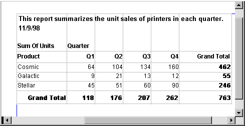

Cross tabulation is a useful technique for analyzing data. By presenting data in a spreadsheet-like grid, a crosstab lets users view summary data instead of a long series of rows and columns. For example, in a sales application you might want to summarize the quarterly unit sales of each product.
In PowerBuilder, you create crosstabs by using the Crosstab presentation style. When data is retrieved into the DataWindow object, the crosstab processes all the data and presents the summary information you have defined for it.
Crosstabs are easiest to understand through an example. Consider the Printer table in the EAS Demo DB. It records quarterly unit sales of printers made by sales representatives in one year. (This is the same data used to illustrate graphs in Chapter 26, "Working with Graphs .")
This information can be summarized in a crosstab. Here is a crosstab that shows unit sales by printer for each quarter:

The first-quarter sales of Cosmic printers displays in the first data cell. (As you can see from the data in the Printer table shown before the crosstab, in Q1 Simpson sold 33 units, Jones sold 5 units, and Perez sold 26 units—totaling 64 units.) PowerBuilder calculates each of the other data cells the same way.
To create this crosstab, you only have to tell PowerBuilder which database columns contain the raw data for the crosstab, and PowerBuilder does all the data summarization automatically.
Crosstabs perform two-dimensional analysis:
Each cell in a crosstab is the intersection of a column (the first dimension) and a row (the second dimension). The numbers that appear in the cells are calculations based on both dimensions. In the preceding crosstab, it is the sum of unit sales for the quarter in the corresponding column and printer in the corresponding row.
Crosstabs also include summary statistics. The preceding crosstab totals the sales for each quarter in the last row and the total sales for each printer in the last column.
Crosstabs in PowerBuilder are implemented as grid DataWindow objects. Because crosstabs are grid DataWindow objects, users can resize and reorder columns at runtime (if you let them).
 Import methods return empty result A crosstab report takes the original result set that was retrieved
from the database, sorts it, summarizes it, and generates a new
summary result set to fit the design of the crosstab. The ImportFile, ImportClipboard,
and ImportString methods can handle only the
original result set, and they return an empty result when used with
a crosstab report.
Import methods return empty result A crosstab report takes the original result set that was retrieved
from the database, sorts it, summarizes it, and generates a new
summary result set to fit the design of the crosstab. The ImportFile, ImportClipboard,
and ImportString methods can handle only the
original result set, and they return an empty result when used with
a crosstab report.
There are two types of crosstabs:
With dynamic crosstabs, PowerBuilder builds all the columns and rows in the crosstab dynamically when you run the crosstab. The number of columns and rows in the crosstab match the data that exists at runtime.
Using the preceding crosstab as an example, if a new printer was added to the database after the crosstab was saved, there would be an additional row in the crosstab when it is run. Similarly, if one of the quarter's results was deleted from the database after the crosstab was saved, there would be one less column in the crosstab when it is run.
By default, crosstabs you build are dynamic.
Static crosstabs are quite different from dynamic crosstabs. With static crosstabs, PowerBuilder establishes the columns in the crosstab based on the data in the database when you define the crosstab. (It does this by retrieving data from the database when you initially define the crosstab.) No matter what values are in the database when you later run the crosstab, the crosstab always has the same columns as when you defined it.
Using the preceding crosstab as an example, if there were four quarters in the database when you defined and saved the crosstab, there would always be four columns (Q1, Q2, Q3, and Q4) in the crosstab at runtime, even if the number of columns changed in the database.
Dynamic crosstabs are used more often than static crosstabs, for the following reasons: